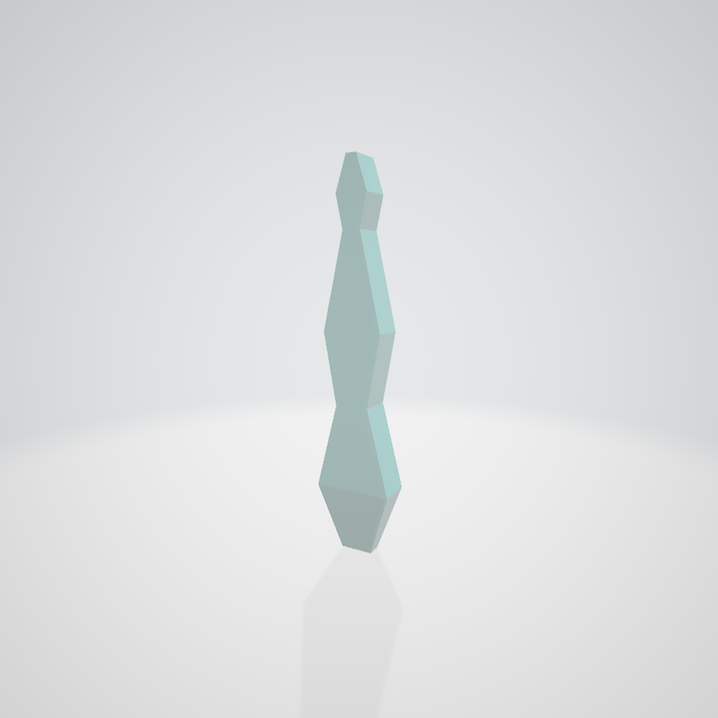

It has been a week since I started this project, meaning I am now at the halfway point of the project. I will now take a step back and assess my current progress.
I went through three iterations of model-creation because of the various challenges I faced.
|

|
|
|
I implemented the interactive demo interface. Currently, the demo only has forward kinematics and a moveable target.
I don't want to move the mesh while trying out different mesh positioning but I still need to know where the endpoint would be located after the different joint rotations are applied so I can see if it is closer to the target point or not. To this end, I created a helper function to calculate the endpoint position after applying the joint parameters.


I started off with creating the GUI. It went smoothly. Although it was a lot of work and I restarted several times, I was able to get a decently working UI after several days. Then, I started working on an IK method. However, while working on it, I realized I needed more helper functions (such as the calculation of a child element's new position once a set of rotations and translations are applied to the armature of its parents without actually applying the rotations) so I had to take a detour to work on that. I think the first method would take the longest to implement due to such detours. Once I get that done, the rest would probably not take as long.
It was a little rough understanding it because the way people explained it was oftentimes very ambigious because there was a lot of flexibility in how to implement it. However, this also meant I wasn't 100% sure about the terms or how to specifically calculate things (such as for the Jacobian, since everything was interweaved and I didn't have a mathematical formula for the total effect, I ended up searching online for an example and scaling down my implementation so it would be easier to calculate the Jacobian of the joints. An article I read said increment and decrement which I interpreted as adding and subtracting, which threw me in a tizzy because I was confident that's not what I should do because I could end up with a negative lambda which isn't what I should have. After careful reading, I saw they mentioned as an example incrementing and decrementing with 10 and 0.04 as factors. They mentioned this exactly once that they meant increment and decrement as in multiplication and division, which required incredibly close reading to catch) and I had to look at several articles to understand what was necessary and what was specific to each implementation (one of them normalized the parameters. which I did not implement because it did not fit my usecase. I want to reach the target point, not just be in the direction of the target point. If I normalize both values, I would think being halfway to the target and being closer along the same line as equally good).
It took about three days to do the research for this method. The high level idea was easy to understand, but once I started trying to implement it, a lot of the details tripped me up. For the other IK goals I had initially planned on doing, if everything suddenly progresses incredibly smoothly and I continue to let this project be an all-consuming fire, I may one get to one of them. One of them is a selectively damped version so hopefully it won't take as long to understand and the other is SMCM, which is completely different so I would need to look into it more. Regarding stylizing it, I would need to do much more research into how to stylize so, at the current point I'm at, I cannot reasonably expect to get that aspect done within the timeframe provided.
The most updated version of the work plan is here.
The changes I have made to the plan are:
August 2 Update: Made forward kinematics a goal.
August 4 Update: Made SMCM a [goal] and moved the two models to [reach goal].
I have underestimated how long implementation of the algorithms would take and overestimated the length of 2 weeks. In my current iteration of the LM algorithm implementation, I have reduced the complexity to three joints with a single degree of freedom each and have managed to get a running but not working-as-expected implementation. Because of this difficulty, I do not think I will be able to reach the stylization part of my initial proposal. I have to be mindful of time as I would need to wrap up as well as create the deliverables which means I ought to spend the last few days polishing the appearance and functionality of the demo, writing the report, and creating the video. Essentially, I have four more days to work on additional functionality as I plan on taking the last two days to wrap up. My plan moving forward is to finish a simple, functional implementation of LM and then, if things progress very smoothly and I have the time, begin implementation of SMCM. Drawing from my experience debugging my implementations for LM, I am not confident I could get it to a functional state before it is due, so it may be a better use of my time to spruce up the GUI so there can be more interactivity with the algorithm such as setting the parameters.